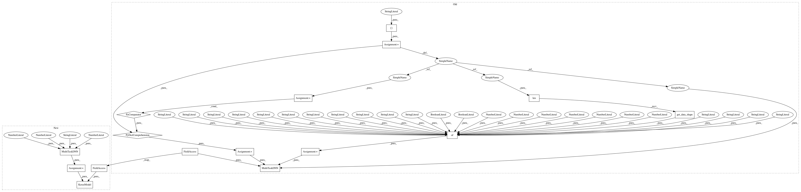

ce4a5ca7cab1ea4ae421fbcd3b28205b1e18158d,deepchem/models/tests/test_overfit.py,TestOverfitAPI,test_keras_skewed_classification_overfit,#TestOverfitAPI#,312
Before Change
sess = tf.Session(graph=g)
K.set_session(sess)
with g.as_default():
tasks = ["task0"]
task_types = {task: "classification" for task in tasks}
n_samples = 100
n_features = 3
n_tasks = len(tasks)
// Generate dummy dataset
np.random.seed(123)
p = .05
ids = np.arange(n_samples)
X = np.random.rand(n_samples, n_features)
y = np.random.binomial(1, p, size=(n_samples, n_tasks))
w = np.ones((n_samples, n_tasks))
dataset = Dataset.from_numpy(self.train_dir, X, y, w, ids, tasks)
model_params = {
"nb_hidden": 1000,
"activation": "relu",
"dropout": .0,
"learning_rate": .15,
"momentum": .9,
"nesterov": False,
"decay": 1e-4,
"batch_size": n_samples,
"nb_epoch": 200,
"init": "glorot_uniform",
"nb_layers": 1,
"batchnorm": False,
"data_shape": dataset.get_data_shape()
}
verbosity = "high"
classification_metric = Metric(metrics.roc_auc_score, verbosity=verbosity)
model = MultiTaskDNN(tasks, task_types, model_params, self.model_dir,
verbosity=verbosity)
// Fit trained model
model.fit(dataset)
model.save()
After Change
verbosity = "high"
classification_metric = Metric(metrics.roc_auc_score, verbosity=verbosity)
keras_model = MultiTaskDNN(n_tasks, n_features, "classification",
dropout=0., learning_rate=.15, decay=1e-4)
model = KerasModel(keras_model, self.model_dir)
// Fit trained model
model.fit(dataset, batch_size=n_samples, nb_epoch=200)
model.save()
In pattern: SUPERPATTERN
Frequency: 3
Non-data size: 16
Instances
Project Name: deepchem/deepchem
Commit Name: ce4a5ca7cab1ea4ae421fbcd3b28205b1e18158d
Time: 2016-09-19
Author: bharath.ramsundar@gmail.com
File Name: deepchem/models/tests/test_overfit.py
Class Name: TestOverfitAPI
Method Name: test_keras_skewed_classification_overfit
Project Name: deepchem/deepchem
Commit Name: ce4a5ca7cab1ea4ae421fbcd3b28205b1e18158d
Time: 2016-09-19
Author: bharath.ramsundar@gmail.com
File Name: deepchem/models/tests/test_overfit.py
Class Name: TestOverfitAPI
Method Name: test_keras_regression_overfit
Project Name: deepchem/deepchem
Commit Name: ce4a5ca7cab1ea4ae421fbcd3b28205b1e18158d
Time: 2016-09-19
Author: bharath.ramsundar@gmail.com
File Name: deepchem/models/tests/test_overfit.py
Class Name: TestOverfitAPI
Method Name: test_keras_classification_overfit
Project Name: deepchem/deepchem
Commit Name: ce4a5ca7cab1ea4ae421fbcd3b28205b1e18158d
Time: 2016-09-19
Author: bharath.ramsundar@gmail.com
File Name: deepchem/models/tests/test_overfit.py
Class Name: TestOverfitAPI
Method Name: test_keras_skewed_classification_overfit